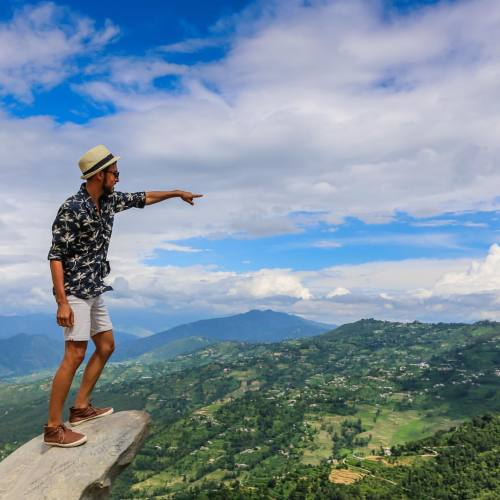
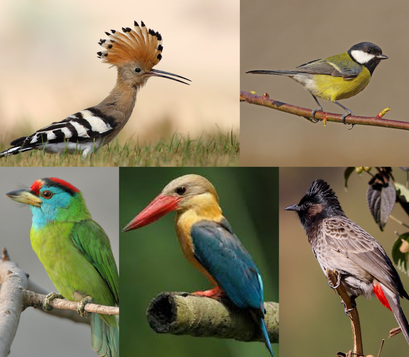

Content Of The Article
Exploring Dhulikhel
The meaning of 'Dhulikhel' means 'the place where tigers play'. Nearly one hour ride with quite a big road in comparision to other outlets of the Kathmandu Valley, Dhulikhel recides in the Kavrepalanchowk District as it faces the backside of the tallest statue of Nepal, Kailashnath Mahadev Statue. Probably the best visit for a night stay chilling with friends or a beautiful ride back, Dhulikhel has a lot to offer as it attracts local and international tourists.
Dhulikhel has been there for centuries as an important trading centre on the commercial route linking Nepal to Tibet. This is the reason why it has been the home for beautiful old architectures and cuturally rich scluptures and temples.
Must Visit Dhulikhel
The name itself clearifies the naturally beautiful Dhulikhel, which means 'the place where tigers play'. A panorama view of around 20 mountain peaks can be seen which also includes Mt. Lhotse (8516 m), Langtang (7234 m), Mt. Gaurishanker (7134 m), Phuribichyachu (6637 m) and many more.
Selfi Stone or Kali Temple
Just a short hike to the hilltop of Dhulikhel, you’ll find the Kali Temple. The temple is for Goddess Kali, who is an epitome of
destruction and power. Close to the temple you can find the famous ‘selfie stone’ which is famous for tourists to capture their
adventure. They pretend to hang off what appears in the photos as a rock ledge, but really if they let go, they would return to
the earth quite quick. The impressive views of the Himalayas, green hills and the ethnic settlements offer you a wonderful memory.
Click for detial
Click for location through Vlog

Namo Buddha
Namobuddha Monastery is known to be one of the most sacred sites for Buddhists around the world and one of the most significant monastic destinations among three in Nepal. It is beautifully situated on the hilltop of Kavre district, offering spiritual environment, rich architectures and impressive views of hills and Himalayas.
Namo Buddha received its name from the historical
stories told. It is believed that a prince gave his life, his bones buried in the local village in a stupa. 3500 years later,
Gautam Buddha visited the village and led three tours around the stupa declaring that he was a reincarnation of the prince. So,
in his name, the village was renamed to Namo Buddha meaning homage to Buddha.
Click for detial
Click for location through Vlog
Bird Watching
With a very favourable climate, Dhulikhel is home to around 872 seasonal and reciding bird species and many visitors are patient enough to capture these beatiful creatues. Not only the visitors, local people also enjoy quitely waiting for the birds in specific areas. The student of grade 4 to 8 are taken to those areas for bird watching and they might also get related assignments.
Among 872 species, few of the most interesting and rare birds are tabulated as:
| Common Name | Nepali Name | Scientific Name |
|---|---|---|
| Red vented bulbul | Jureli | Pycnonotus cafer |
| Hoopoe | Faafre | Upupa epops |
| Stork billed kingfisher | Thulo maatokore | Pelargopsis capensis |
| Warbler | Fisto | Basileuterus griseiceps |
| Indian cuckoo | Kaafal paakyo | Cuculus micropterus |
| Great tit | Chichilkote | Parus major |
| Blue throated barbet | Kuthurke | Megalaima asiatica |
| Tailor bird | Damai chara/Paatsiune fisto | Orthotomus sutorius |

Few Tips Before Visit
Do wear warm clothes, its a little bit windy and colder as move closer to Dhulikhel, although the the forecast shows similarities when compared to that of the Kathmandu. There is more frequent rain, so take your essentials accordingly.
The hospitality they provide is very satisfying. Both of the sunrise and the sunset are mesmarising, do try to enjoy atleast one of them.
There are many cultural festivals happening everyyear such as Navadurga Jatra, Chandeswori Jatra, Dhulikhel Mahotsav and many more. Don't miss the mouth watering Newari food delicacies.
Have to treat your palate with unique cheesy food of Makasam Dai(cheese lassi, cheese momos, pizza, fresh chips), Bamboo Momo, Kadaknath Chiken(special breed with black muscle and black blood),